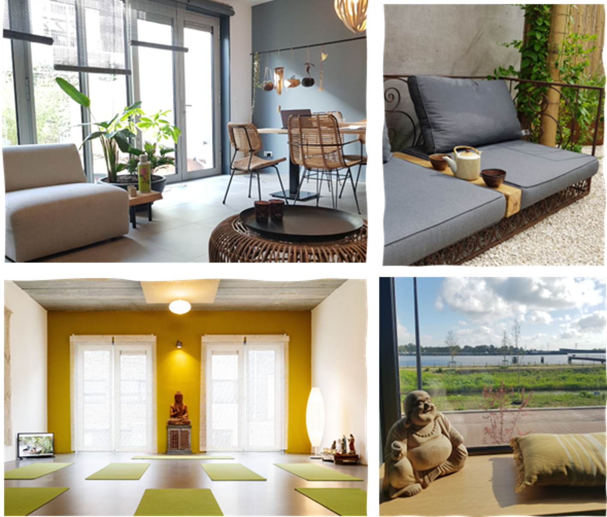

Het Bamboehuis
Het is een rustige yogaplek in Amsterdam, waar een zuivere energie aanwezig is die je helpt jezelf te ontwikkelen. De yoga en meditatie beoefening in het Bamboehuis zorgen ervoor dat je door deze energie in balans kunt komen, stilte vindt en uiteindelijk tot zelfrealisatie kunt komen.
In 2018 is het Bamboehuis ontworpen en in augustus 2019 afgebouwd en ingewijd voor iedereen die op zoek is naar stilte door yoga en meditatie te beoefenen, met uiteindelijk doel jezelf te ontwikkelen en te realiseren.
Het is een zelfbouwproject, door yogi’s Herman en Evelien geïnitieerd en is speciaal voor yoga en meditatie ontworpen door architectenbureau Bets en Oudendorp. Tijdens het ontwikkel en bouwproces is er steeds geprobeerd het doel voor ogen te houden, waardoor elk detail van het Bamboehuis je in contact brengt met de stilte en jezelf.
In het Bamboehuis word je meegenomen het leven te zien zoals het is. Je ontdekt in alles, dat liefde, energie en harmonie de basis zijn om van je leven een blij leven te maken.

De locatie
Het Bamboehuis kijkt uit over het IJ en staat op het Zeeburgereiland in Amsterdam. Op de begane grond zijn de loungeruimte en tuin en op de eerste verdieping de yogazaal. Alle ruimten ademen een serene sfeer uit, waar de aanwezige energie je in contact brengt met een dieper besef van jezelf. De twee bovenste etages worden bewoond door de yogi founders van het Bamboehuis Herman & Evelien en hun twee dochters.
De lessen in het Bamboehuis zijn uniek en zo opgebouwd dat elke les je in contact brengt met jezelf, het leven en je eigen handelen en denken.
De deur staat open
Als het tijd is, dan word je vanzelf ergens naartoe getrokken in het leven. Zie dat deze mogelijkheden in je leven zich voordoen en je helpen je weg te vinden. Probeer er in mee te gaan, zonder oordeel en doe er je voordeel mee. Komt het Bamboehuis op jouw pad, stel je open, laat je vaste denkpatronen en oordelen los en vertrouw erop dat het leven weet wat je nodig hebt. Je kunt niets afdwingen in het leven, maar als het eenmaal tijd is om in actie te komen laat de gelegenheid dan niet aan je voorbij gaan, mis de boot niet en stap het Bamboehuis binnen, de deur staat altijd voor je open.